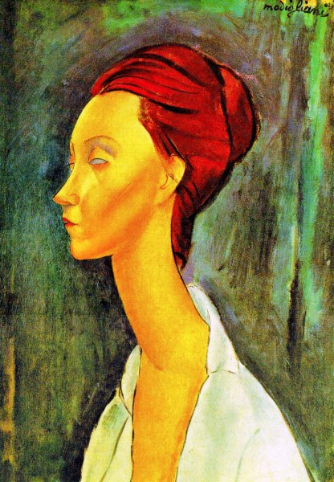
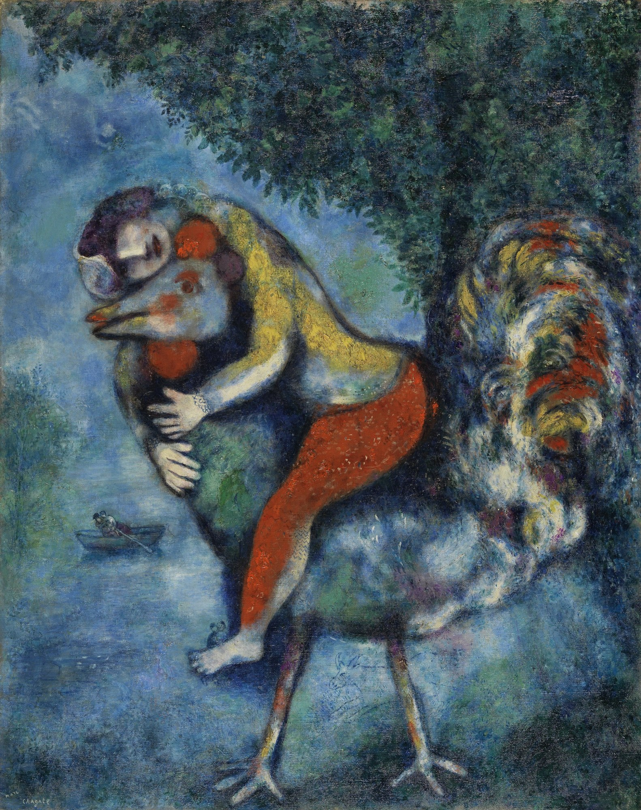
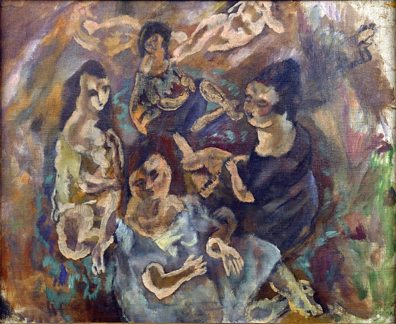
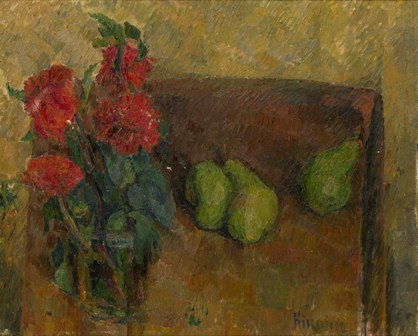
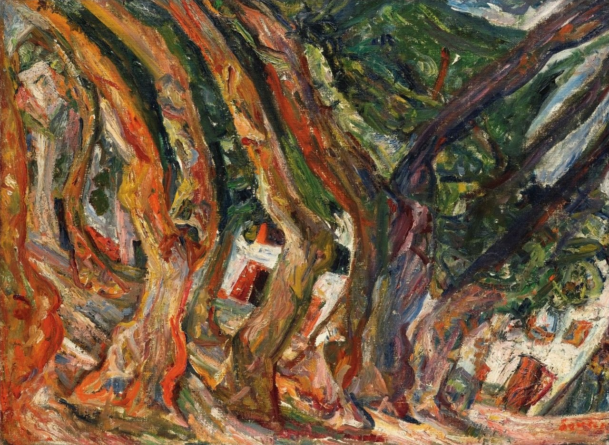
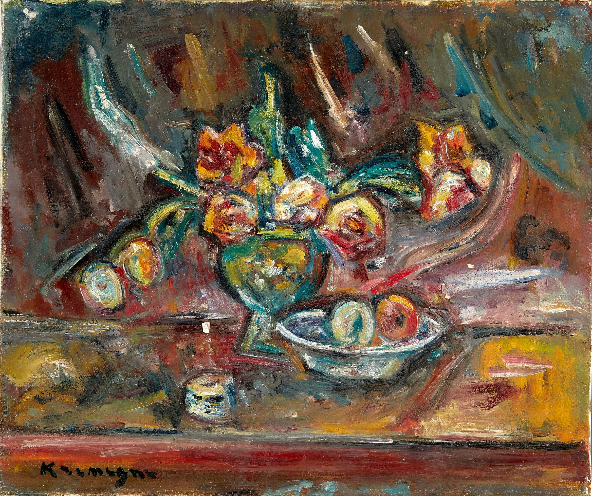

Animé par une passion profonde pour la peinture, Monsieur Dechewsky a fait de l’art bien plus qu’un métier : une véritable vocation.
À travers sa galerie, il partage son amour des œuvres singulières, des artistes de caractère et des courants artistiques qui ont marqué l’histoire de la peinture. Il y présente ses propres créations ainsi qu’une sélection d’œuvres d’artistes emblématiques de la mouvance expressionniste et de l’École de Paris, parmi lesquels Chaïm Soutine, Amedeo Modigliani, Pinchus Kremegne, Michel Kikoïne, Jules Pascin, Marc Chagall et Pablo Picasso.

Modigliani utilise des couleurs intenses et des formes allongées pour exprimer la mélancolie et la sensibilité intérieure.
Dans un univers bouleversé par la guerre, Picasso dénonce la violence et la souffrance humaine. À travers des figures déformées, des contrastes de noir, de blanc et de gris, il exprime la douleur, la peur et le désespoir des victimes, célébrant la résistance face à la barbarie.

Cette œuvre appartient au mouvement surréaliste. Elle représente une scène imaginaire avec des couleurs vives et des formes fantastiques.
Chaque œuvre raconte une histoire, révèle une émotion et témoigne d’un regard unique sur le monde. La galerie Dechewsky invite ainsi les amateurs d’art, les collectionneurs et les passionnés à découvrir un univers où la sensibilité artistique, la liberté d’expression et la richesse des styles occupent une place essentielle.
Bienvenue dans l’univers de la galerie Dechewsky, un lieu de découverte, de partage et de passion, désormais accessible en ligne

À travers des couleurs intenses et des formes dynamiques, l’artiste représente plusieurs personnages dans une scène pleine d’émotion. Les coups de pinceau expressifs créent une atmosphère vivante et traduisent la sensibilité humaine.

Un bouquet de fleurs rouges et des poires vertes se côtoient dans une composition aux tons chauds. Les textures et les coups de pinceau expressifs créent une atmosphère intime, révélant la beauté simple des objets du quotidien.

À travers des arbres aux formes tourmentées et des couleurs intenses. Les coups de pinceau dynamiques traduisent le mouvement de la nature et l’intensité des émotions, caractéristiques de l’expressionnisme.
Entre fruits, vaisselle et objets du quotidien, Kremegne compose une scène riche en couleurs et en matière. Son regard transforme une nature morte ordinaire en un tableau vibrant, où chaque élément semble raconter sa propre histoire.

© DEDAL2026
Adresse : 10 RUE DE LA REPUBLIQUE
75000 PARIS
TTel : 01.63.45.85.56
Fax : 01.63.45.78.52
Email : dedal@gmail.com